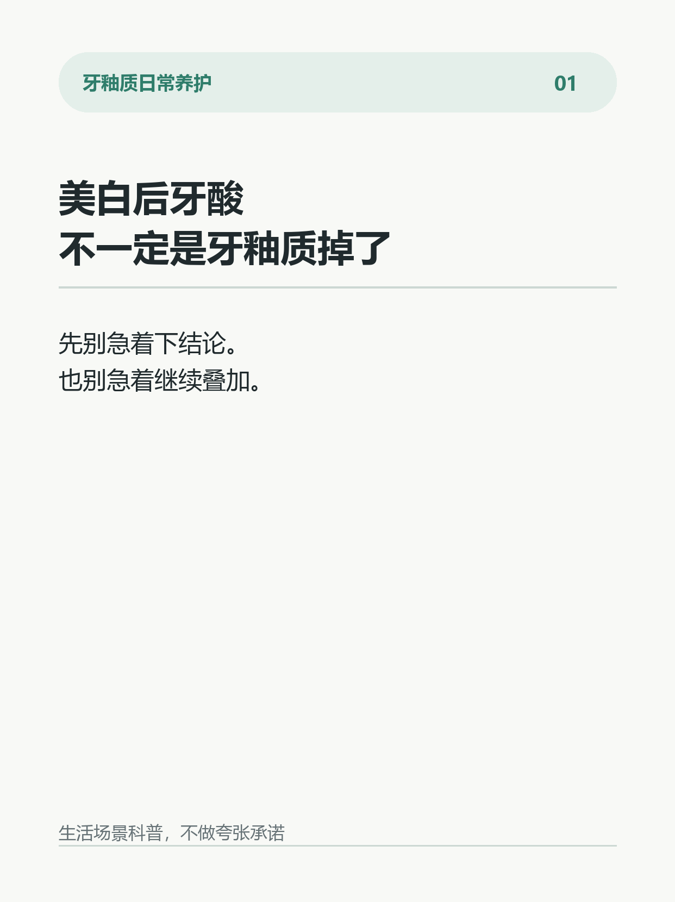
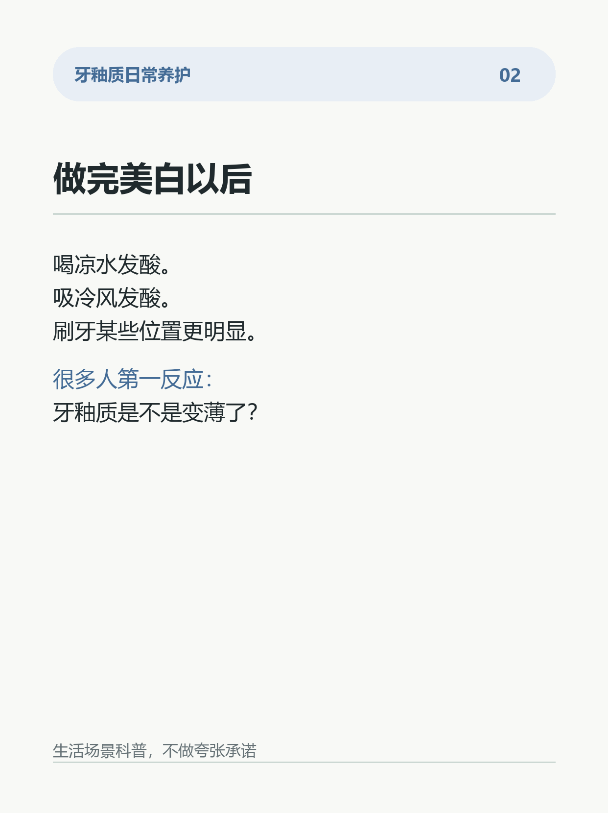
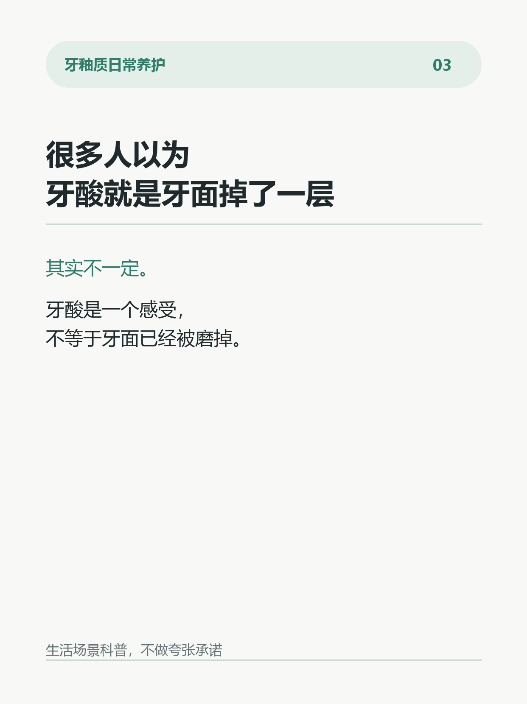
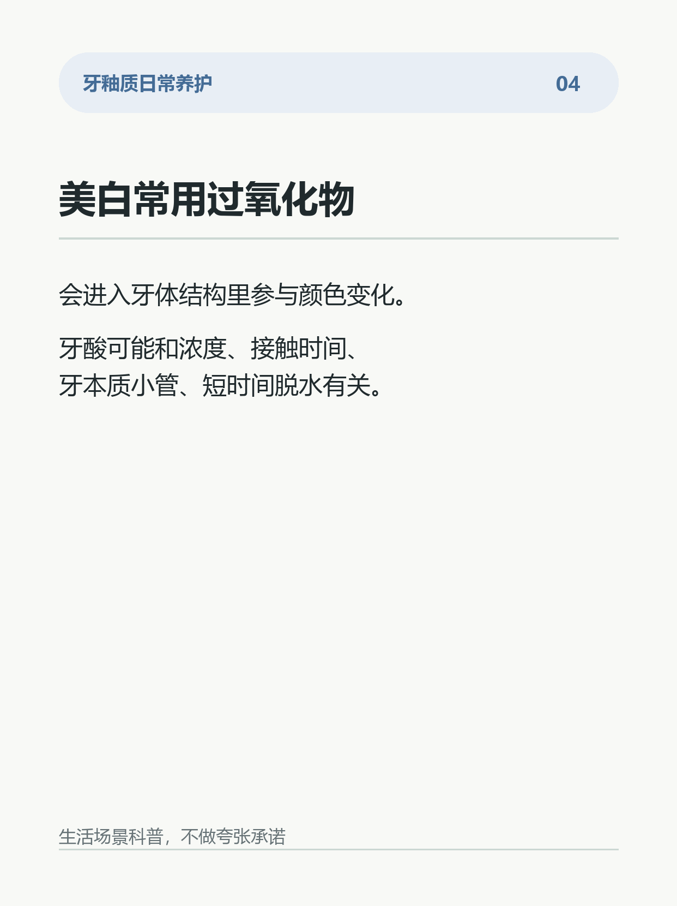
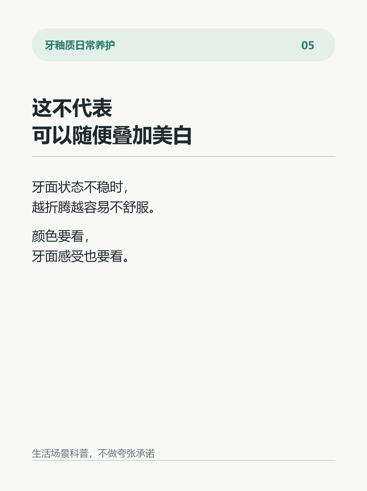
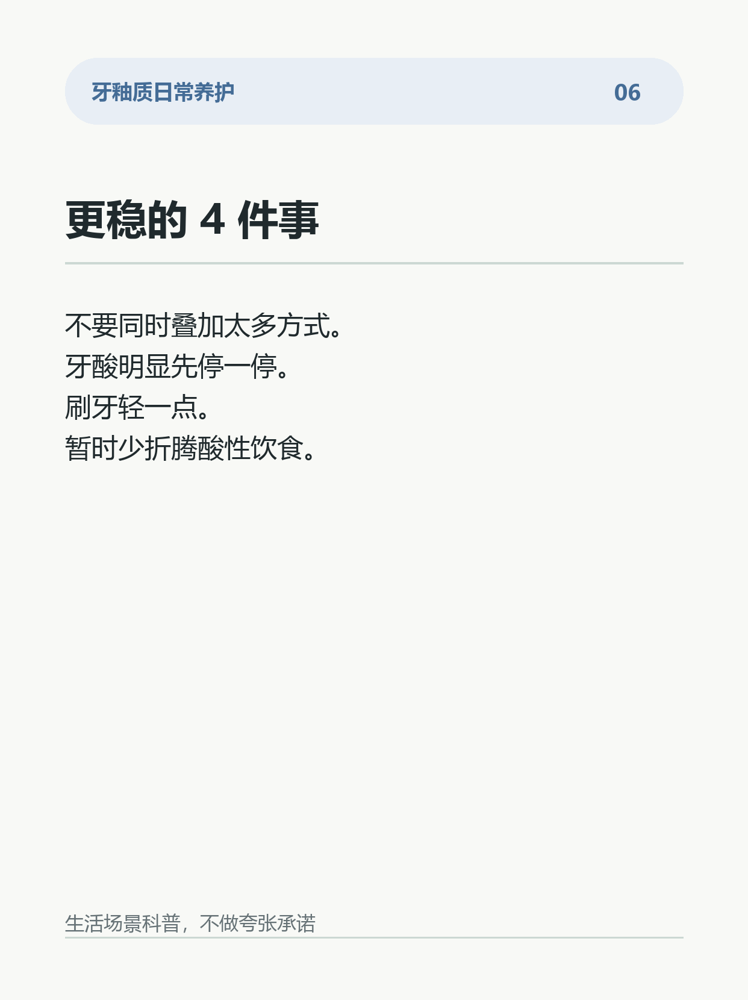
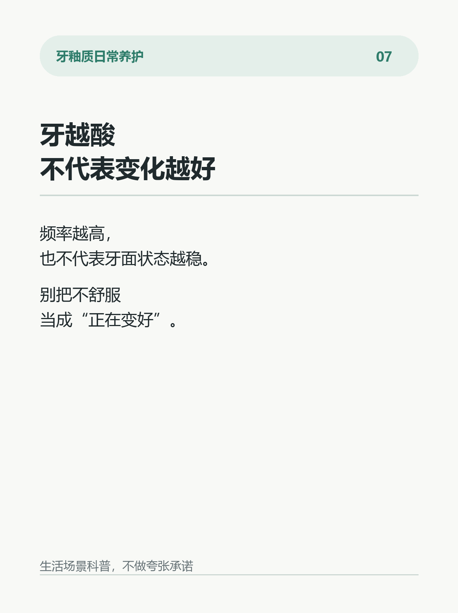
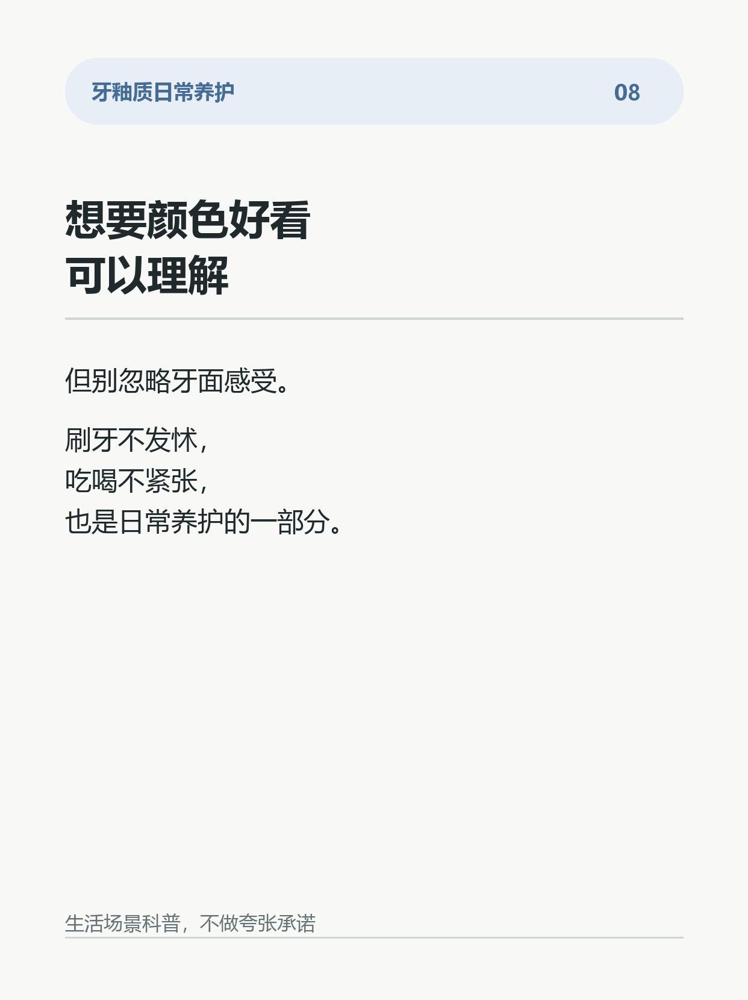

美白后牙酸，不一定是牙釉质掉了
做完美白以后，最容易被忽略的不是颜色。
是那种突然出现的酸：
喝凉水有点酸。
吸一口冷风有点酸。
刷牙碰到某几个位置，也更明显。
很多人会立刻担心：
是不是牙釉质被弄薄了？
其实不一定。
牙齿美白常用的过氧化物，会进入牙体结构里参与颜色变化。这个过程中，一部分人会出现短时间牙酸。它可能和过氧化物浓度、接触时间、牙本质小管、牙齿短时间脱水等因素有关。
所以，牙酸不等于牙釉质“掉了一层”。
但也不代表可以随便叠加美白。
更稳的做法是：
1. 不要同一阶段叠加太多美白方式。
2. 牙酸明显时，先暂停高刺激做法。
3. 美白前后刷牙轻一点，别用力横刷。
4. 暂时少折腾酸性饮食和硬毛牙刷。
5. 如果酸感持续、越来越明显，建议做一次口腔检查。
一个误区：
牙越酸，不代表变化越好。
频率越高，也不代表牙面状态越稳。
想要颜色好看，可以理解。
但牙面舒服、刷牙不发怵，也很重要。
你做美白时，更担心颜色，还是牙酸？
#牙釉质 #牙齿美白 #牙齿敏感 #护牙日常 #刷牙习惯 #口腔护理 #牙面状态 #生活小习惯








参考来源与边界
# 参考来源
1. American Dental Association. Whitening.
https://www.ada.org/resources/ada-library/oral-health-topics/whitening
2. National Institute of Dental and Craniofacial Research. Sensitive Teeth.
https://www.nidcr.nih.gov/health-info/sensitive-teeth
3. Carey CM. Tooth Whitening: What We Now Know. Journal of Evidence-Based Dental Practice. 2014.
https://doi.org/10.1016/j.jebdp.2014.02.006
4. Joiner A, Luo W. Tooth colour and whiteness: A review. Journal of Dentistry. 2017.
https://doi.org/10.1016/j.jdent.2017.09.006
5. American Dental Association. Brushing Your Teeth.
https://www.mouthhealthy.org/all-topics-a-z/brushing-your-teeth
# 证据边界
这些资料可以支持：牙齿美白过程中可能出现短时间牙酸；过氧化物浓度、接触时间、牙本质相关结构和牙齿短时间脱水都可能参与不适感；刷牙力度和牙面状态也需要一起关注。
这些资料不能支持：所有美白后的牙酸都代表牙釉质损伤；任何美白方式都适合长期高频叠加；某一种日常护理产品可以让牙齿一直变白或完全避免牙酸。